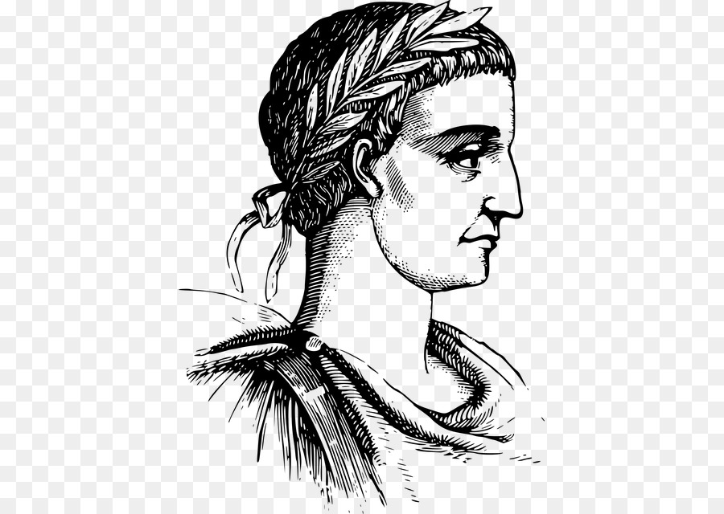

Sobre a cifra de Cesar
Trata-se de um tipo de cifra de substituição, na qual cada letra de um texto a ser criptografado é substituída por outra letra, presente no alfabeto porém deslocada um certo número de posições à esquerda ou à direita.
Por exemplo, se usarmos uma troca de quatro posições à esquerda, cada letra é substituída pela letra que está quatro posições adiante no alfabeto, e nesse caso a letra A seria substituída pela letra E, B por F, C por G, e assim sucessivamente.
A cifra de César recebe esse nome pois, segundo o escritor Suetônio, foi utilizada por Júlio César para se comunicar com seus generais, protegendo mensagens militares.
Essa cifra é uma cifra de substituição monoalfabética, o que significa que cada letra do texto plano é substituída por uma outra letra do alfabeto no texto criptografado (cifrado), de forma constante (sempre as mesmas letras são utilizadas). Por conta disso, ela acaba sendo extremamente simples de ser decifradas.
Como o texto cifrado acaba tendo exatamente o mesmo número de caracteres do texto plano, também classificamos a cifra de césar como Monogrâmica, sendo então classificada mais corretamente como Cifra de Substituição Monoalfabética Monogrâmica.
Exemplo:
Cifra de César com alfabeto com rotação à esquerda de quatro posições:
Alfabeto Normal: ABCDEFGHIJKLMNOPQRSTUVWXYZ
Cifrado: EFGHIJKLMNOPQRSTUVWXYZABCD
Vamos criptografar uma mensagem simplesmente trocando cada letra da mensagem presente no alfabeto normal pela sua equivalente no alfabeto cifrado. A descriptografia é justamento o processo inverso:
em texto plano: Vamos aprender Criptografia
criptografada: ZEQSW ETVIRHIV GVMTXSKVEJME
Mensagem Secreta
Assista o video e entenda a logica usada na nossa pagina para criar a sua mensagem secreta.